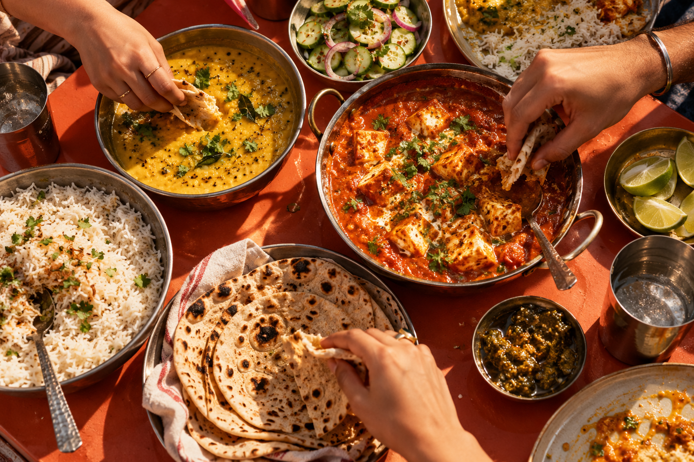
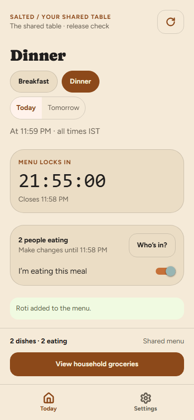
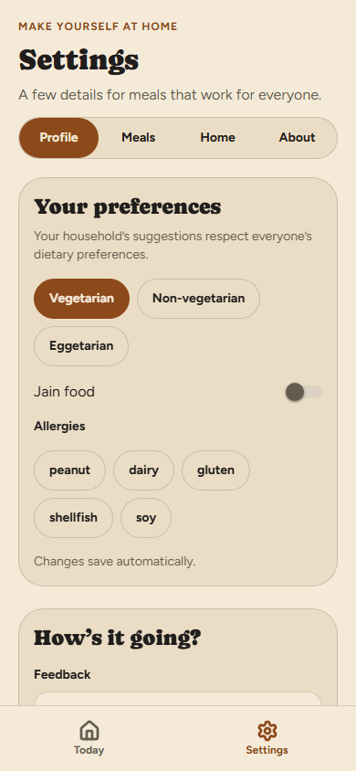
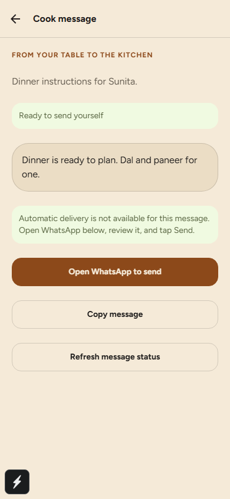

Bring your people.
Create a household and invite the people you eat with. Everyone gets a place at the table.
FOR THE PEOPLE YOU BREAK ROTI WITH.
Flatmates. Family. Your chosen chaos.
Get everyone’s meals on the same page.

THE DAILY “KYA BANEGА?”
Someone’s eating out. Someone wants extra rotis. Someone forgot to tell the cook. Sound familiar?
Salted brings the menu, the people and the groceries together. So dinner feels like home, not a group project.
From “what’s for dinner?” to “dinner’s sorted.”
Create a household and invite the people you eat with. Everyone gets a place at the table.
Choose dishes, set servings and say who’s in. Different appetites, one clear plan.
Combine your grocery list and prepare a concise cook message. Copy it or send it yourself.
SAME TABLE. DIFFERENT TRIBES.
The gym bro, the late-shift one, the “anything is fine” one. A shared menu that leaves room for everyone.
Your roti.
My sabzi.
Our scene.
A LOOK INSIDE
Real screens from the Salted app. Tap a screen to take a closer look.

See who’s eating and when the menu closes.

Keep dietary preferences close at hand.

Review the dinner message, then share it yourself.
App captures from a sample household. Screen content may differ from your setup.
TAKE IT FOR A SPIN
A sample household. Real buttons. No sign-up needed.
YOUR SAMPLE HOUSEHOLD
Illustrative portions for this demo. Adjust to your household’s appetite.
GROCERY LIST · 4 PEOPLE
Demo only. Nothing is sent to anyone.
Meal choices and servings live together, so nobody’s appetite gets lost in the chat.
A combined grocery list helps you buy for the meals you’ve actually chosen.
Turn the household’s choices into a simple message you can review and share.
Eating out? Staying in? Attendance keeps your meal plan in step with your people.
BEFORE YOU ASK
No. Salted helps your household plan home-cooked meals, coordinate servings, combine groceries and prepare a message for your cook.
It’s for anyone sharing meals: flatmates, families, couples and other shared households. Your household sets its own menu and servings.
No. This website’s demo runs in your browser with sample data. It doesn’t create a household, save your choices or send messages.
Cook messages can be copied or opened in WhatsApp for you to send manually. Automatic delivery isn’t currently implemented.
The project is open source. Follow the setup guide on GitHub to run the Expo app with a configured Supabase backend. This page is a standalone introduction and demo.
YOUR PEOPLE. YOUR FOOD. ONE SHARED PLAN.